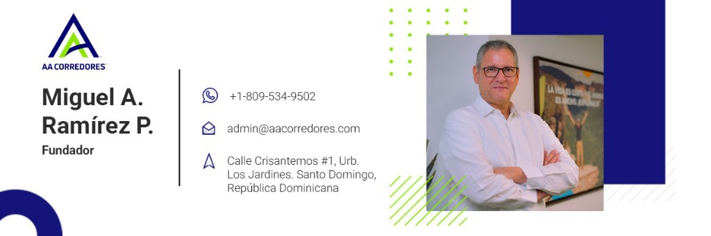

Seguros y reaseguros
Corretaje registrado y asesoría técnica en seguros y reaseguros.
Registrada ante la Superintendencia de Seguros
Corretaje claro. Coberturas que sí encajan.
Corredora de seguros dominicana dedicada al corretaje de seguros, reaseguros y valores, con asesoría técnica para personas y empresas.
Intermediamos entre clientes y aseguradoras para conseguir las mejores coberturas — salud, ARS, AFP, viajes y más — con acompañamiento técnico en cada paso.
Miguel A. Ramírez P. · Fundador

Administración y comercialización de seguros, con intermediación seria y transparente.
Corretaje registrado y asesoría técnica en seguros y reaseguros.
Orientación para personas y empresas que buscan protección adecuada.
Puente entre usted y las aseguradoras para mejores condiciones de cobertura.
Administración y comercialización de seguros de viaje para que salga con respaldo — antes, durante y después del trayecto.
Cuéntenos qué necesita proteger. Le ayudamos a comparar y elegir.
Calle Crisantemos #1, Urb. Los Jardines. Santo Domingo, República Dominicana